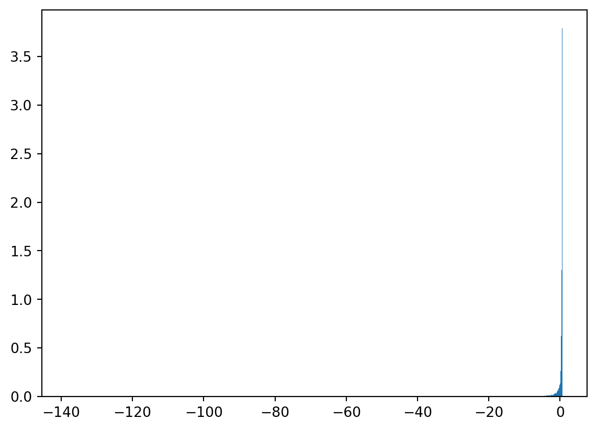

\((M_n, n \in \mathbb{N}_0)\) is a martingale in discrete time for a filtration \((\F_n, n \in \mathbb{N}_0)\). Let \(\tau\) be a stopping time for the same filtration and let
Any linear combination of \(X_t\) and \(Y_t\) is another Gaussian random variable. Observe that
\[
\begin{align}
\alpha X_t + \beta Y_t = \int_0^t \left((\alpha + \beta) + (\beta - \alpha)s\right) dB_s
\end{align}
\] by linearity of the Itô integrals for \(X_t\) and \(Y_t\) and any \(\alpha, \beta \in \mathbb{R}\). Since \(\alpha X_t + \beta Y_t\) can be expressed as a Wiener integral, it is Gaussian.
Therefore, \((X_t, Y_t)\) is a Gaussian vector and so if \(X_t\) and \(Y_t\) are uncorrelated, they are independent. At \(t = \sqrt{3}\), \(\E(X_t Y_t) = 0\) and so \(X_t\) and \(Y_t\) are independent.
5.9 Practice on Itô Integrals
The process \((X_t, t \geq 0)\) is given by
\[
X_t = \int_0^t \sin{s} d B_s.
\]
(a)
This process is Gaussian.
Proof:
This is a Wiener process so it is Gaussian. \[\qed\]
\[
\begin{align}
\E(B_s^2 \exp(-2 B_s)) &= s \E(Z \exp(-2 \sqrt{s} Z)) \\
&= s \E(\exp(-2B_s) - 2 \sqrt{s} Z \exp(-2 B_s)) \\
&= s \E(\exp(-2B_s)) -2s\E(B_s \exp(-2B_s))
\end{align}
\] where \(Z\) is a standard Gaussian and we’ve used integration by parts:
\[
\E(Zg(Z)) = \E(g'(Z)).
\]
Using the MFG of the Gaussian \[
\E(\exp(-2B_s)) = \exp(2s).
\]
Is this Gaussian? Let’s experiment:
import numpy as npimport matplotlib.pyplot as pltnormal_samples = np.random.default_rng().normal(0, 1, 10000)Z = (normal_samples +1) * np.exp(-normal_samples -1/2)plt.hist(Z, density=True, bins=1000)plt.show()

Clearly not!
5.14 Gaussian Moments Using Itô
Let \((B_t, t \in [0, 1])\) be a Brownian motion. Then
\[
\E(B_t^k) = \frac{1}{2}k(k-1)\int_0^t \E(B_s^{k-2}) ds.
\]
For almost all \(\omega\)\[
t \mapsto \exp(t B_t(\omega))
\] is a composition of a continuous function (\(B_t(\omega)\)) with another continuous function. Therefore, the measurability and continuity requirements are met.
The integrability requirement is also met: \[
\begin{align}
\E(\exp(2t B_t)) &= \int_0^T \exp(2 t^3) dt \\
&\leq T \exp(2 T^3) < \infty.
\end{align}
\]
\[\qed\]
(d)
The covriance between \(B_t\) and \(\int_0^t \exp(s B_s) ds\) is
\[
g(x) = -\frac{1}{3}x^3 + Cx + D
\] where \(C\) and \(D\) are constants we can choose.
We have chosen \(g\) so that \(f(t, B_t)\) is a martingale. We cannot apply Doob’s optional stopping theorem directly as the stopped process \(f(\tau \wedge t, B_{\tau \wedge t})\) is not bounded. However, the stopped martingale satisfies \[
\E(f(\tau \wedge t, B_{\tau \wedge t})) = f(0, B_0) = D
\] and we show below that taking the limit as \(t \to \infty\)\[
\E(f(\tau, B_\tau)) = D.
\]
Fiddly convergence proof
For \(k \geq 1\)
\[
\lim_{t\to\infty} \E((\tau \wedge t)^k) = \E(\tau^k)
\] by the monotone convergence theorem and \[
\lim_{t\to\infty} \E(B_{\tau\wedge t}^k) = \E(B_{\tau}^k)
\] by the dominated convergence theorem. In particular, \(\tau \wedge t \to \tau\) and \(B_{\tau \wedge t} \to B_\tau\) in \(L^2\) and
\((M_s, s \leq t)\) is a martingale for \(t < 1\) because it can be expressed as an Itô integral (plus a constant).
(c)
Given (b), we can state that
\[
\E(M_t) = M_0 = 1
\] for \(t <1\).
(d)
\[
\lim_{t \to 1^-} M_t = 0
\] almost surely.
Proof:
There exists \(A \subseteq \Omega\) with \(\P(A) = 1\), such that
\[
g: t \mapsto B_t(\omega)
\] is continuous. Let \(B = \{\omega: B_t(\omega) \neq 0 \}\); clearly, \(\P(B) =1\) and \(\P(A \cap B) = 1\). Choose \(\omega \in A \cap B\) and consider the corresponding \(g\): on the interval \([0, 1]\), \(g^2\) attains a minimum \(C \geq 0\) and so
\[
\frac{1}{\sqrt{1 -t}} \exp(\frac{-B_t^2}{2(1 -t)}) \leq
\frac{1}{\sqrt{1 -t}} \exp(\frac{-C}{2(1 -t)})
\] for \(0 \leq t < 1\).
For this fixed \(\omega\)\[
\begin{align}
\frac{1}{\sqrt{1-t}} \exp(\frac{-C}{2(1-t)}) &= \sqrt{\frac{1}{1-t}\exp(\frac{-C}{1-t})} \\
&\to 0
\end{align}
\] as \(t\to 1^-\); this is true for \(\omega \in A\cap B\), so almost surely.
Note
\[
\exp(C/(1-t)) > \frac{C^{2}}{2(1-t)^2}
\] so \[
\exp(-C/(1-t)) < \frac{2(1-t)^2}{C^2}
\] and \[
\frac{1}{1-t}\exp(-C/(1-t)) < \frac{2(1-t)}{C^2} \to 0
\] as \(t \to 1^-\).
\[\qed\]
(e)
\[
\E(\sup_{0 \leq t < 1} M_t) = + \infty.
\]
Proof:
Suppose that
\[
\E(\sup_{0 \leq t < 1} M_t) < \infty
\] i.e. \(\exists C > 0\) such that \[
\E(\sup_{0 \leq t < 1} M_t) < C.
\]
Then
\[
\P(\{ \omega: \exists t \in [0,1) \text{ such that } M_t(\omega) \geq C \}) = 0.
\]
Almost surely, \(M_t \leq C\) for \(t \in [0,1)\) and so since
\[
M_t \to 0
\] almost surely, the dominated convergence theorem would imply that
Let \((X_n, n \geq 0)\) be a sequence of Gaussian random variables that converge to \(X\) in \(L^2(\Omega, \F, \P)\).
\(X\) is Gaussian.
Proof:
Let \(m_n = \E(X_n)\) and \(\sigma_n^2 = \E(X_n^2) - \E(X_n)^2\). We know that
\[
m_n \to \E(X)
\] and \[
\sigma_n^2 \to \sigma^2 = \E(X^2) - \E(X)^2
\] as \(n \to \infty\). Therefore,
\[
\E(\exp(i t X_n)) \to \exp(itm - \sigma^2t^2/2).
\]
Convergence of \(X_n \to X\) in \(L^2\) implies that there is a subsequence such that \[
X_{n_k}(\omega) \to X(\omega)
\] almost surely. Using continuity of the exponential function \[
\exp(itX_{n_k}(\omega)) \to \exp(it X(\omega))
\] almost surely. The sequence is bounded by \(1\):
Having this characteristic function shows that \(X\) is Gaussian with mean \(m\) and variance \(\sigma^2\).
5.20 \(L^2\) is Complete
(a)
Let \((X_n)\) be a Cauchy sequence in \(L^2(\Omega, \F, \P)\). There exists a subsequence \((X_{n_k})\) such that \[
\|X_m - X_{n_k} \| \leq 2^{-k}
\] for all \(m > n_k\).
Proof:
For each \(k\), there exists \(N\) such that
\[
\| X_n - X_m \| < 2^{-k}
\] for \(n, m > N\) . Choose \(n_k = N + 1\) to construct the desired sequence.
\[ \qed \]
(b)
Consider the candidate limit
\[
\sum_{j=0}^{\infty} (X_{n_{j+1}} - X_{n_j})
\] where \(X_{n_0} = 0\). This sum converges almost surely.
Then \((A_n)\) is an increasing sequence of events and
\[
A = \cup A_n = \{ \omega: \sum_{j=0}^{\infty} |X_{n_{j+1}}(\omega) - X_{n_j}(\omega)| < \infty \}.
\] By continuity of probability \[
\P(A) = \lim_{n\to\infty} \P(A_n) = 1.
\] For any \(\omega \in A\), the sum converges. \[\qed\]
(c)
Define \[
X = \sum_{j=0}^{\infty} (X_{n_{j+1}} - X_{n_j})
\] which is finite, almost surely.
\[
\| X - X_{n_k}\| \to 0
\] as \(k\to \infty\) and \(\| X\| < \infty\).
Proof:
\[
X_{n_k} = \sum_{j=0}^{k-1} (X_{n_{k+1}} - X_{n_k})
\] and so \(X_{n_k} \to X\) almost surely.
\[
\begin{align}
\sum_{n=1}^{\infty} \P(E_n) &\leq \sum_{n=1}^{\infty} \frac{1}{\delta^2 2^{n-1}} \\
&= \frac{2}{\delta^2}\\
\end{align}
\] and so by the Borel-Cantelli lemma, \[
\P(\lim\sup_{n\to \infty} E_n) = 0.
\] We can see that \[
\cup_{n=k}^{\infty} E_n = \{ \omega: \exists j \geq k \max_{t \in [1-1/2^j, 1 -1/2^{j+1})} |Z_t(\omega)| > \delta\}
\] and
\[
\begin{align}
\cap_{k=1}^{\infty} \cup_{n=k}^{\infty} E_n &= \{\omega: \forall k\, \exists j \geq k \text{ such that } \max_{t \in [1-2^{j}, 1-1/2^{j+1})}|Z_t| > \delta \}\\
& \supseteq \{ \omega : \lim_{t \to 1^{-}} |Z_t(\omega)| > \delta \}.
\end{align}
\] Note: \[
t \mapsto Z_t(\omega)
\] is continuous almost surely.
Therefore, \[
\P(\lim_{t \to 1^{-1}} |Z_t| > \delta) = 0
\] for all \(\delta > 0\). That is, \(Z_t \to 0\) as \(t \to 1^-\) almost surely.